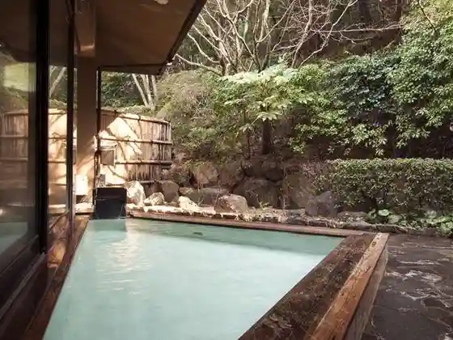
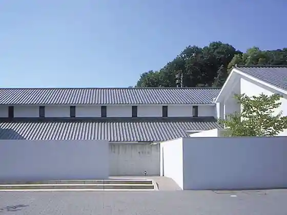
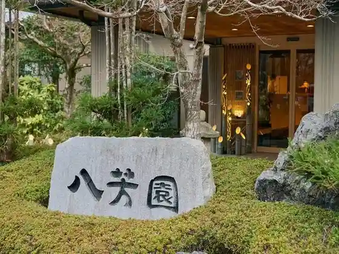

Kusamakura Onsen Tensui
Tamana, Kumamoto · 0968-82-4500 · Official / source link
Tamana Onsen
Tamana, Kumamoto · 0968-74-2961 · Official / source link

Kanko Hotto Plaza Tama Rara
Tamana, Kumamoto · 0968-57-9663 · Official / source link
Hisaharu Sanso
Tamana, Kumamoto · 0968-72-2266 · Official / source link

Yama Momiji no Yado Happoen
Tamana, Kumamoto · 0968-72-2161 · Official / source link

Onjuku Gogatsu
Tamana, Kumamoto · 0968-72-3157 · Official / source link
Kinpo Sono
Tamana, Kumamoto · 0968-72-2501 · Official / source link
Sho Ten Onsen Nako I Kan
Tamana, Kumamoto · 0968-82-2035 · Official / source link
Furusato Center Y BOX (Waibokkusu)
Tamana, Kumamoto · 0968-84-3700 · Official / source link
Hebigatani Park
Tamana, Kumamoto · 0968-72-5655 · Official / source link
Maeda Iebetsu Tei
Tamana, Kumamoto · 0968-82-4511 · Official / source link
Mizumoto Orenji Garden
Tamana, Kumamoto · 0968-82-2126 · Official / source link
Sho Tai Yama Furusato Nature Park
Tamana, Kumamoto · 0968-73-3900 · Official / source link
Renge In Tanjo Tera Oku Yuki In
Tamana, Kumamoto · 0968-74-3533 · Official / source link
Tamana Ritsu History Museum Kokoro Pia
Tamana, Kumamoto · 0968-74-3989 · Official / source link
Mi Yama Tembo Park
Tamana, Kumamoto · 0968-75-1122 · Official / source link
Takase Megane Hashi
Tamana, Kumamoto · 0968-75-1136 · Official / source link
Tamana Viewpoint Kan
Tamana, Kumamoto · 0968-75-1314 · Official / source link
Kofuku Tera
Tamana, Kumamoto · 0968-74-9011 · Official / source link
Oku Yuki In no Dai Chamori
Tamana, Kumamoto · 0968-74-3533 · Official / source link
Tamana Dai Shrine
Tamana, Kumamoto · 0968-74-1955 · Official / source link
Daibo Burial Mound
Tamana, Kumamoto · 0968-75-1136 · Official / source link
Yamada no Fuji (Yamada Hiyoshi Shrine)
Tamana, Kumamoto · 0968-72-5313 · Official / source link
Urakawa Mizugiwa Green Park
Tamana, Kumamoto · 0968-72-5313 · Official / source link
Hotaru Village
Tamana, Kumamoto · 090-1875-7143 · Official / source link
Kusamakura Koryu Kan
Tamana, Kumamoto · 0968-82-4511 · Official / source link
Kanaguri Shi San no Juka · Museum
Tamana, Kumamoto · 0968-57-7548 · Official / source link
Taimei Umi Toko Michi (Taimeikaishoro)
Tamana, Kumamoto · Official / source link
Tamana Onsen Tsukasa Baths
Tamana, Kumamoto · 0968-72-7777 · Official / source link
Tamana Furawa Park
Tamana, Kumamoto · 0968-51-2727 · Official / source link
Hiki no Shrine (Hiki no Jinja)
Tamana, Kumamoto · 0968-72-2917 · Official / source link
Tobo Maruyama
Tamana, Kumamoto · 0968-74-9087 · Official / source link
Nako I Kan Bettei Tama Kyo (Tamayura) Kazoku Yu
Tamana, Kumamoto · 0968-71-2615 · Official / source link
Private Spa Kurage (Kurage)
Tamana, Kumamoto · 0968-79-7726 · Official / source link
Tamana Onsen Kazoku Furo Junno Toki Yu Gan (Yugan)
Tamana, Kumamoto · 0968-73-1126 · Official / source link
Kusamakura Sanso Campground
Tamana, Kumamoto · 0968-82-4500 · Official / source link